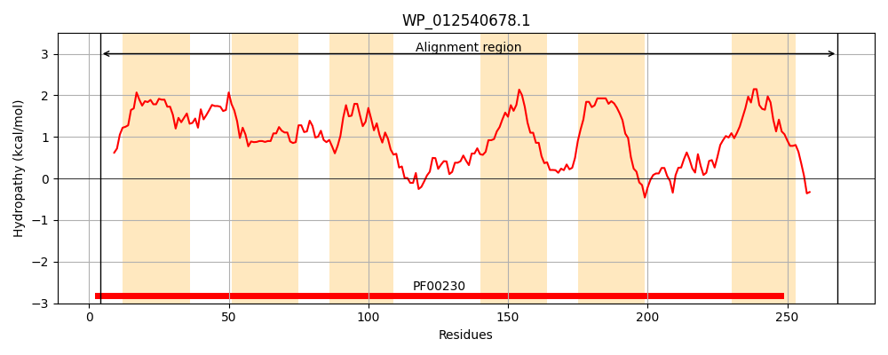
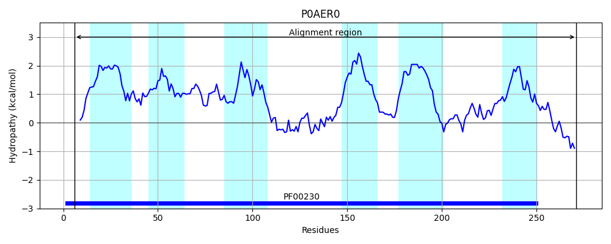
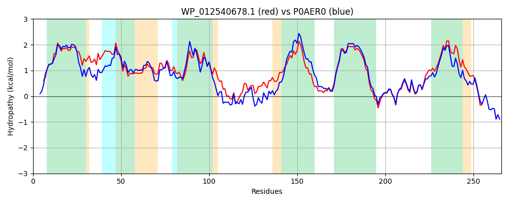

Hit Accession: P0AER0
Hit TCID: 1.A.8.1.1
Hit Description: gnl|BL_ORD_ID|8789 gnl|TC-DB|P0AER0|1.A.8.1.1 Glycerol uptake facilitator protein - Escherichia coli.
Mach Len: 266
e:0.000000
Query TMS Count : 6
Hit TMS Count: 6
TMS-Overlap Score: 6.000000
Predicted Substrates:CHEBI:2846;arsenite(3-), CHEBI:26191;polyol, CHEBI:5448;glycerol
BLAST Alignment:
Score: 998 , Bit scores: 389 bits, E-value: 8.7e-138, Alignment length: 266, Percentage identity: 68
Query: 4 SLRAQCIAEFLGTGLFLFFGICCLSALKLAGASLGLWEICIIWGLGISLAVYLTAGISGGHLNPAVTVALWLFACFPGRKVVPYIVAQVAGAFGGAVLAWILYSTLFTQFETVHHMVRGSLESLQLASIFSTYPAPELSIWHAALVEVVITSMLMGMIMALTDDGNGVPKGPLAPLLIGILVAVIGASTGPLTGFAMNPARDFGPKLFAWLAGWGDIAMTGGRDIPYFIVPIIAPLLGACLGAAIYRFLIANNLPCHTC-VEEKNT 268
+L+ QCIAEFLGTGL +FFG+ C++ALK+AGAS G WEI +IWGLG+++A+YLTAG+SG HLNPAVT+ALWLFACF RKV+P+IV+QVAGAF A L + LY LF FE HH+VRGS+ES+ LA FSTYP P ++ A VE+VIT++LMG+I+ALTDDGNGVP+GPLAPLLIG+L+AVIGAS GPLTGFAMNPARDFGPK+FAWLAGWG++A TGGRDIPYF+VP+ P++GA +GA YR LI +LPC C VEEK T
Sbjct: 6 TLKGQCIAEFLGTGLLIFFGVGCVAALKVAGASFGQWEISVIWGLGVAMAIYLTAGVSGAHLNPAVTIALWLFACFDKRKVIPFIVSQVAGAFCAAALVYGLYYNLFFDFEQTHHIVRGSVESVDLAGTFSTYPNPHINFVQAFAVEMVITAILMGLILALTDDGNGVPRGPLAPLLIGLLIAVIGASMGPLTGFAMNPARDFGPKVFAWLAGWGNVAFTGGRDIPYFLVPLFGPIVGAIVGAFAYRKLIGRHLPCDICVVEEKET 271 | Protein Hydropathy Plots: |
|---|
|  |  |
Pairwise Alignment-Hydropathy Plot:
|
|---|
|  |